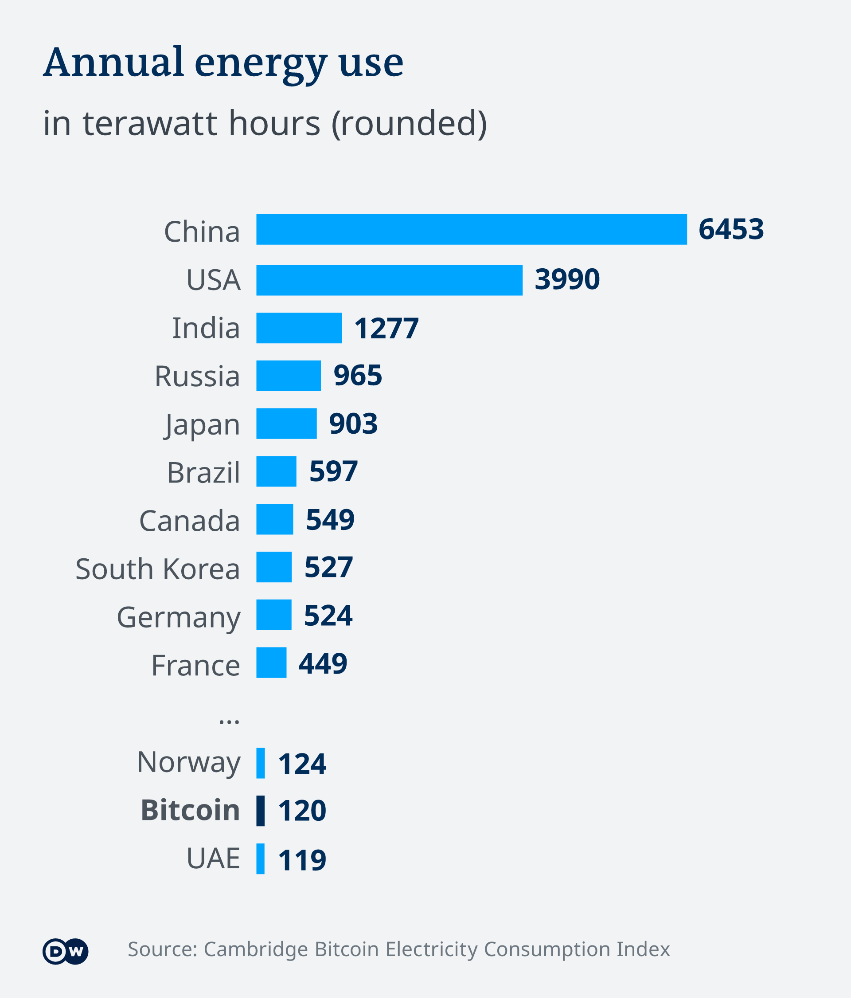
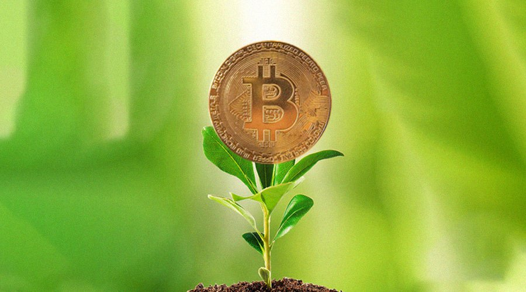

Societal Impact
To understand how the use of digital currencies has an impact on society,
the advantages and disadvantages of it's usage should be compared.
Advantages & Disdvantages of digital currency
| Advantages |
Disadvantages |
| Fast transaction times |
Susceptible to hacking |
| Cheaper transaction costs |
Requires internet access |
| Long distance transactions |
Unpredictable changes in value |
| No physical manufacturing |
Requires access to technology |
| Variety of unique uses |
High energy usage |
From this table, we see that the use of digital currencies is very convenient for the average consumer,
being quicker and cheaper than using regular cash. This impacts society because it will increase technology use,
and businesses and banks will have to transition to being online, with the increasing amount of digital currency users.
A more negative societal impact is the large increase in energy consumption. Bitcoin's network
uses 128 GWh (Gigawatt Hours) per day, an absurdly large amount,
and this is only one of many cryptocurrencies.
For more details on the environmental implications of such energy usage, you can view the page on
environmental impacts.
Ethical Concerns
Misuse of digital currency
One ethical concern of digital currency is that is often misused do to the lack of regulation.
Digital currency is the method of choice among criminals, as it is harder to track and regulate.
This means that digital currency is increasing the amount of illegal transactions and tax evasion.
Unequal access
Depending on where you live and your socioeconomic status, some people don't have access to digital currency.
This is an ethical concern because it is inaccessible to some groups of people, while others are able to enjoy
the benefits of digital currency freely.

As you can see in this map, some areas have less access to internet, meaning they can't use digital currency.
Environmental Impact
The main environmental impact of digital currency is it's energy consumption.
The increased technology usage does lead to some extra energy usage, but the main problem
is the creation and mining of cryptocurrencies. In the chart below you can see how Bitcoin's energy usage
compares to the energy usage of full countries.

As you can see, Bitcoin uses so much energy that it's consumption is comparable to full countries,
and with over 15,000 different cryptocurrencies, it is clear that while being convenient, the energy consumption
of digital currencies is a big environmental problem.
If you're interested in ways to combat this energy consumption problem, check out the sustainability page,
where you can learn about ways to reduce the impact of technology on the environment.
Sustainability
Ignoring the problem of energy consumption, digital currency is a great way to use technology
to reduce environmental impact. It has no physical form, so no materials, machinery, and manpower are
needed to use them. Additionally, being able to pay online reduces transportation emissions.

The Energy Problem
There are two main solutions to the energy consumption problem. The first is to implement alternative energy sources.
If renewable energy is used to mine cryptocurrencies, there would be no damage to the environment and it would greatly reduce the impacts of technology.
The other potential solution would be to implement environmental regulations.
What is it?
Digital currency is any currency that is available exclusively online, meaning it has no physical form, only an associated value.
Digital currencies are used like normal currencies as a method of payment for goods and services,
but some digital currencies have more specific use cases, such as in video game communities, gambling websites, and social networks.
Types of Digital Currency
Cryptocurrencies
This type of digital currency is secured by cryptography,
and is what most people think of when they hear about digital currency.
Some examples of cryptocurrencies include Bitcoin, Ethereum, and Dogecoin.
Virtual Currencies
This type of digital currency is unregulated and controlled by developers.
Virtual currencies are very common in video games, with one example being "Robux",
the currency used in the popular game known as "Roblox".
Central Bank Digital Currencies
This type of digital currency is issued and regulated by large banks.
Central Bank Digital Currency is often used as a replacement to traditional currency
when paying online.
Cryptocurrency Prices
Cryptocurrencies are known for having fluctuating prices. Use the below tool to observe current market prices.
References
Blockchain for Social Impact: The good, bad, and in between. Terrapass. (2022, May 17). Retrieved June 5, 2022, from https://terrapass.com/blog/blockchain-social-impact-good-bad
Frankenfield, J. (2022, February 8). Digital currency. Investopedia. Retrieved June 5, 2022, from https://www.investopedia.com/terms/d/digital-currency.asp
Reiff, N. (2022, May 29). What's the environmental impact of cryptocurrency? Investopedia. Retrieved June 5, 2022, from https://www.investopedia.com/tech/whats-environmental-impact-cryptocurrency
Samuel-Ogbu, B. (2022, January 27). Ethics Update on Cryptocurrencies. Seven Pillars Institute. Retrieved June 5, 2022, from https://sevenpillarsinstitute.org/ethics-update-on-cryptocurrencies
Shetty, N. (2021, July 19). How to solve the bitcoin energy consumption problem. Forkast. Retrieved June 5, 2022, from https://forkast.news/solve-bitcoin-energy-consumption-problem
Image Sources
- https://www.freepik.com/premium-photo/bitcoin-blockchain-crypto-currency-digital-encryption-digital-money-exchange-technology-network-connections_8507166.htm
- https://n26.com/en-eu/blog/types-of-cryptocurrency
- https://stock.adobe.com/images/Blockchain-Information-flows-in-the-digital-global-networks.-3D-illustration-of-/273179184
- https://www.dw.com/en/why-does-bitcoin-need-more-energy-than-whole-countries/a-56573390
- https://www.shutterstock.com/image-photo/hacking-hunting-crypto-currency-1480094903
- https://ourworldindata.org/internet
- https://www.europeanbusinessreview.com/eco-friendly-cryptocurrency-you-should-know-about-it-2021/
- https://www.shutterstock.com/image-photo/bitcoin-gold-coin-cryptocurrency-on-us-1861013422